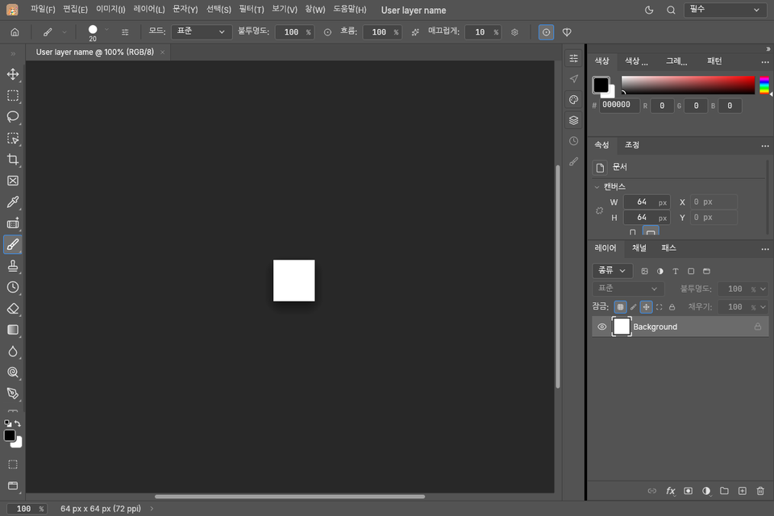
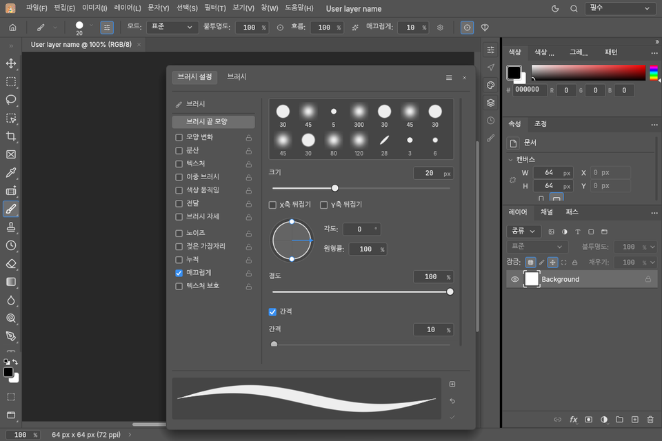
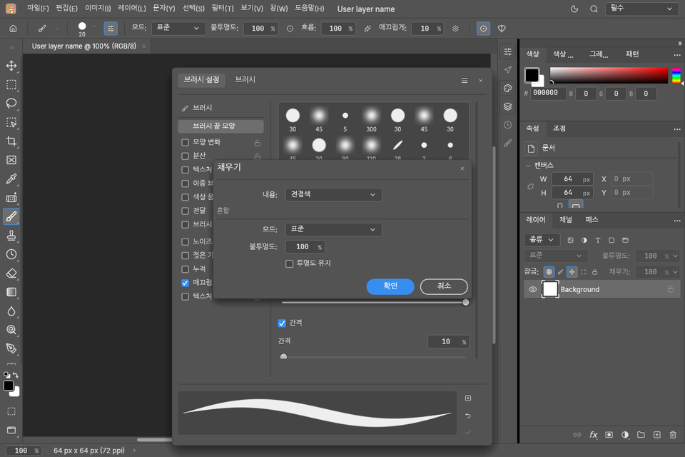

한국어 우선
메뉴와 설정을 한국어로 제공하고, 한글 조합 입력과 글꼴 표시를 실기기에서 확인하며 다듬습니다.
태블릿에서 한국어로 쓰는 편집기에 필요한 것부터.
메뉴와 설정을 한국어로 제공하고, 한글 조합 입력과 글꼴 표시를 실기기에서 확인하며 다듬습니다.
필압 브러시, 터치 제스처, 가상 단축키 패드를 갖추고 키보드가 연결되면 패드를 접을 수 있습니다.
인터넷 권한을 요청하지 않으며 파일은 직접 고른 위치에만 저장됩니다. 광고와 분석 도구가 없습니다.
개발 중인 화면의 한국어 렌더링입니다.



PC 해상도로 렌더링한 개발 화면이며, 태블릿 전용 레이아웃은 작업 중입니다. 실제 앱과 다를 수 있습니다.
첫 릴리스 전입니다.